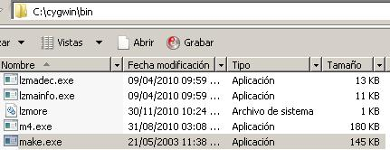
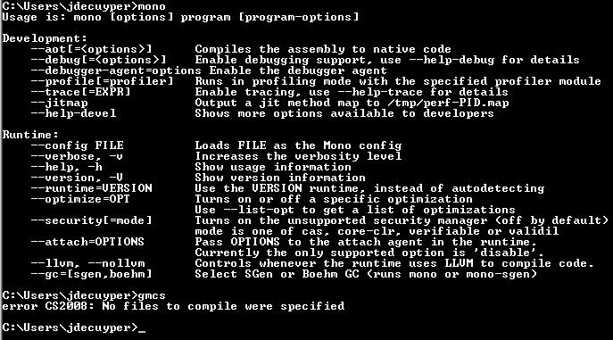

December 21, 2010
Compiling mono on Windows is a bit more complicated than on linux. Fortunately, thanks to a post by Andreia Gaita, I got there and came back again "while remaining reasonably sane". I decided to write down my own enlightened path to the compilation of mono on Windows in order to refresh a bit the details about the cygwin dependencies.
The key part of the compilation is to have a correct configuration of cygwin installed and also to grab a mono source code that is ready to compile (i.e. with no errors, sometimes the latest clone from github may contain potential problems). After a lots of compiling intents, I learned that the best method was, after each compilation crash, to remove completely cygwin from my system and make a clean install. It was a bit of a hassle at first but hopefully you will not to go through all this and have your mono build ready to compile in a couple of minutes.
1. Get cygwin: download the latest cygwin executable. I'm running version 1.7.7-1. To find out about the version you are working with, type "uname -a" inside cygwin's console.
2. Get mono source code: download the latest stable source code from Github.
3. Install mono:download the Windows installer and have it executed. I left the mono installation on the following path: "C:\mono" in order to avoid problems with spaces inside directories's names.
4. Install cygwin & packages: execute the cygwin's installer. In addition to the default packages, install cygwin with the following ones:
automake v. 1.11
bison v. 2.4.2-1
gcc-core: C compiler v. 3.4.4
gcc-g++: C++ compiler v. 3.4.4
gdb: GNU debugger v. 6.8-2
getttext (version 0.17-11 was already included)
intltool v. 0.41.1-1
libiconv v. 1.13.1-1
libiconv2 (version 1.13.1-1 was already included)
libtool v. 2.4-1
pkg-config v. 0.23b-10
libintl-2 v. 0.12.1-3 (make.exe requires it)
Do not install make.exe, check to see if it is not added in the default package, mine did not include it but you never know so don't forget to have a look at it. Instead, download the non buggy version (3.80-1) of make.exe from the mono website. Add the make.exe file to cygwin's bin directory:
5. Configure cygwin's path: when you launch the cygwin console for the first time, 3 files are created with your default preferences (.bashrc, .inputrc, .bash_profile). On my Windows XP box, those files are created at "C:\cygwin\home" and on my Windows Vista box at "C:\cygwin\etc\skel". Edit the .bashrc file and add at the end of the file the following lines:
PATH=.:/usr/local/bin:/usr/bin:/bin:/usr/X11R6/bin:/cygdrive/c/mono/bin
PKG_CONFIG_PATH=.:/lib/pkgconfig:/cygdrive/c/mono/lib/pkgconfig
LD_LIBRARY_PATH=.:/usr/local/lib:/usr/lib:/lib:/cygdrive/c/mono/lib
export PATH PKG_CONFIG_PATH LD_LIBRARY_PATH
Don't forget to replace "/cygdrive/c/mono/bin", "/cygdrive/c/mono/lib/pkgconfig" and "/cygdrive/c/mono/lib" with the correct location of the mono installation on your system.
6. Launch compilation: copy the mono source to "C:\cygwin\usr\src". Add the mono's bin ("C:\mono\bin") directory to Windows path. This is important because the compilation process will require an existing gmcs compiler to terminate successfully. Now, launch cygwin's console and once located inside the source directory, execute:
./autogen.sh --prefix=/usr/local && make &;& make installIf all goes well, the mono binaries will be created and copied to "C:\cygwin\usr\local". Now remove "C:\mono\bin" from your path, add "C:\cygwin\usr\local\bin" and "C:\cygwin\usr\local\lib") and start coding .
